Mejora tu rendimiento corriendo
Si estás estancado o no sabes cómo estructurar tus entrenamientos, necesitas dejar de improvisar.
Quiero mejorarSi estás estancado o no sabes cómo estructurar tus entrenamientos, necesitas dejar de improvisar.
Quiero mejorarUn método para organizar tu entrenamiento y mejorar sin lesionarte.
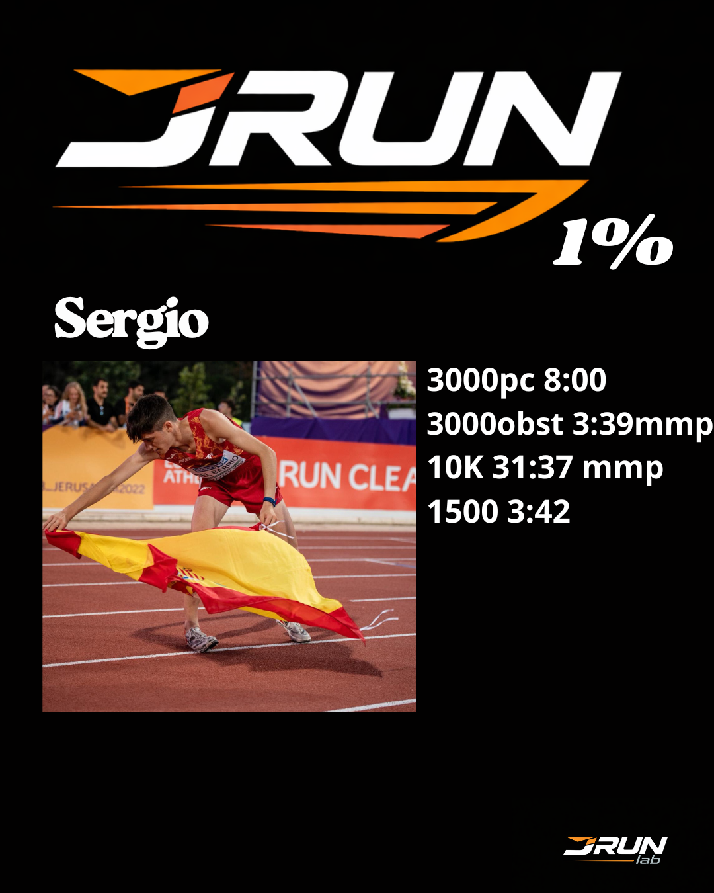
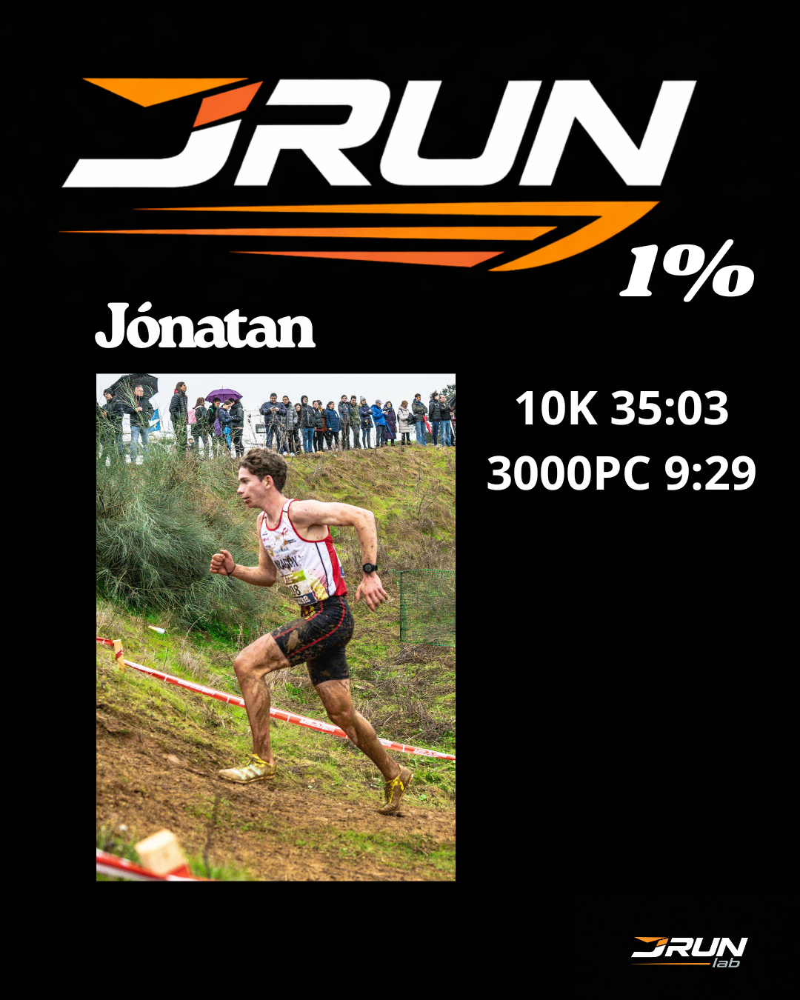
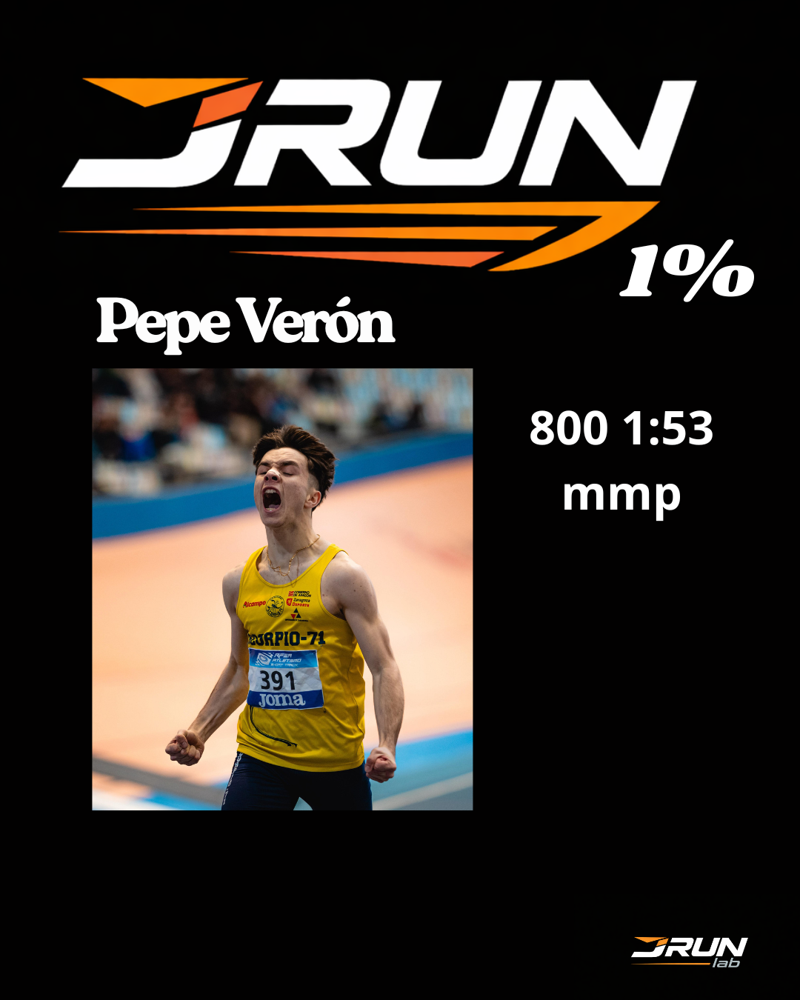
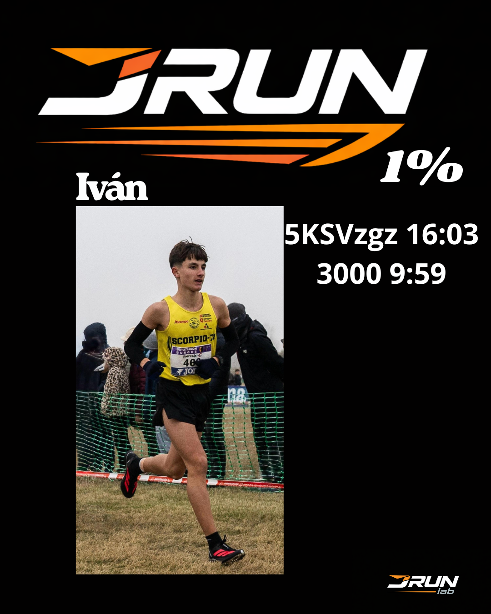
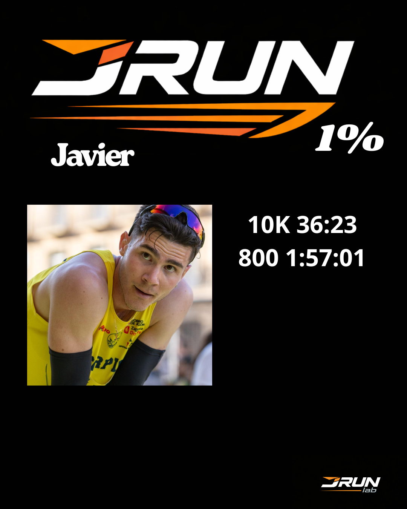
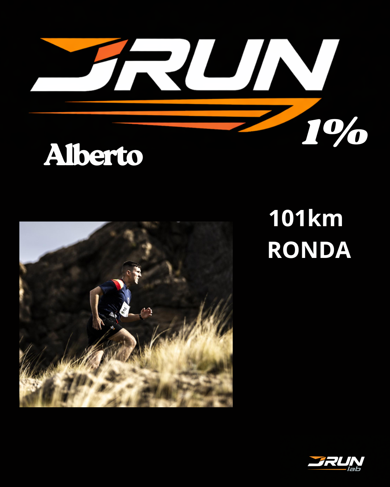
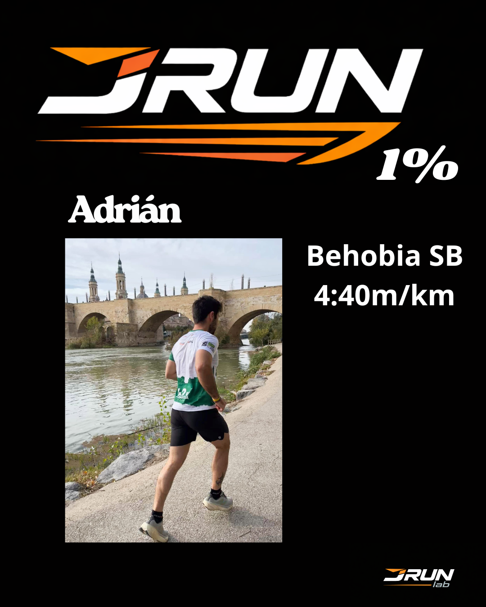
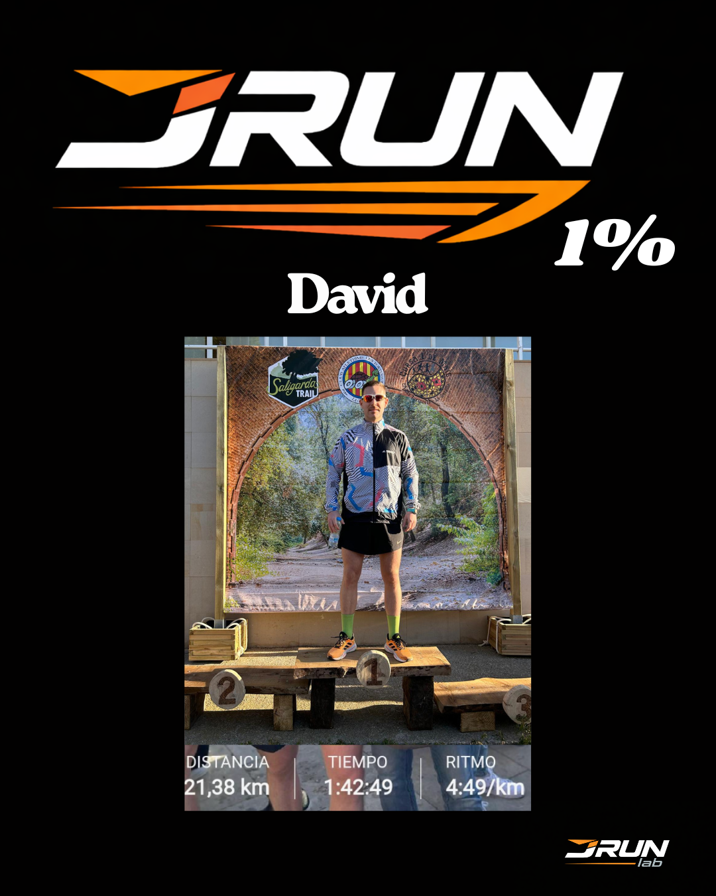
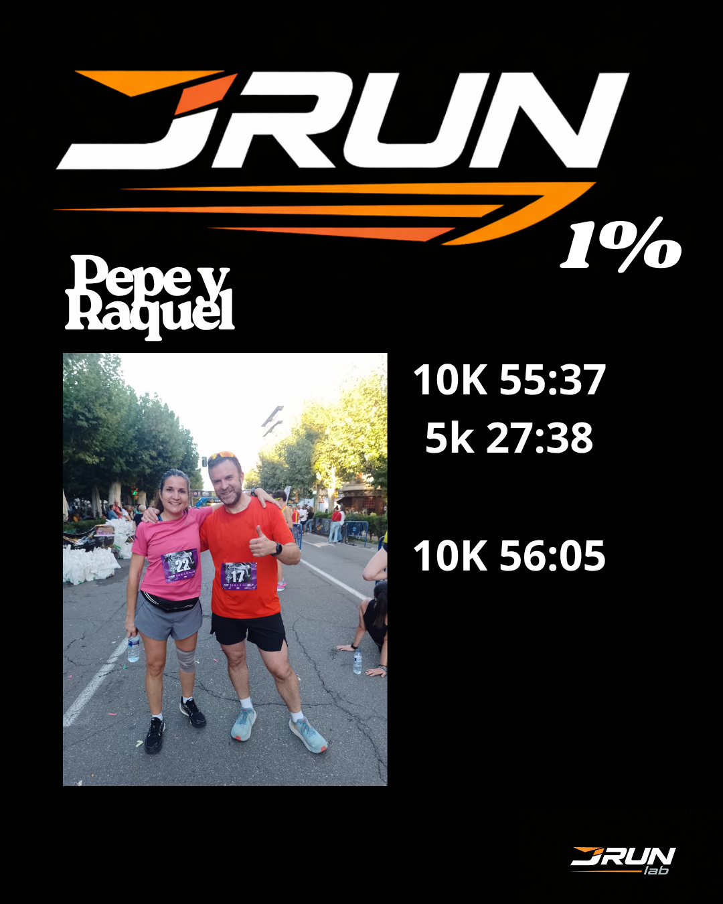
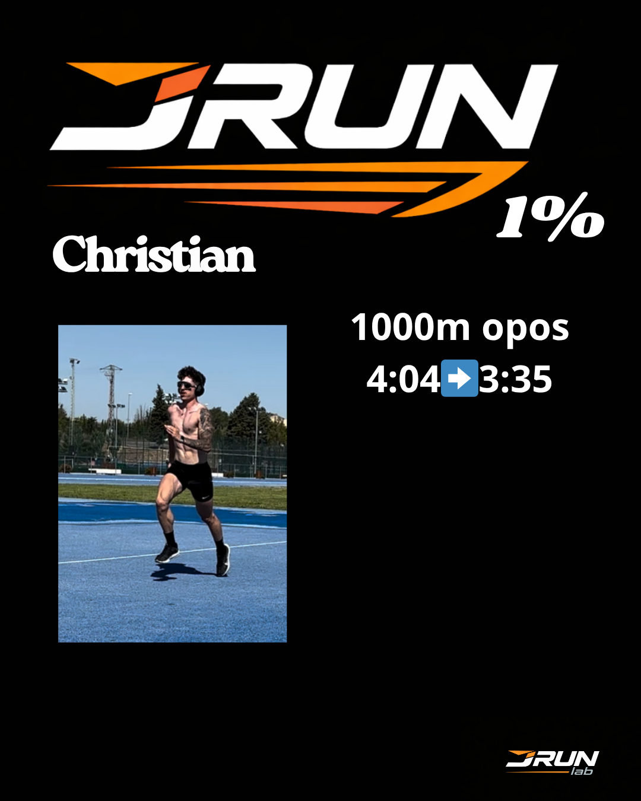
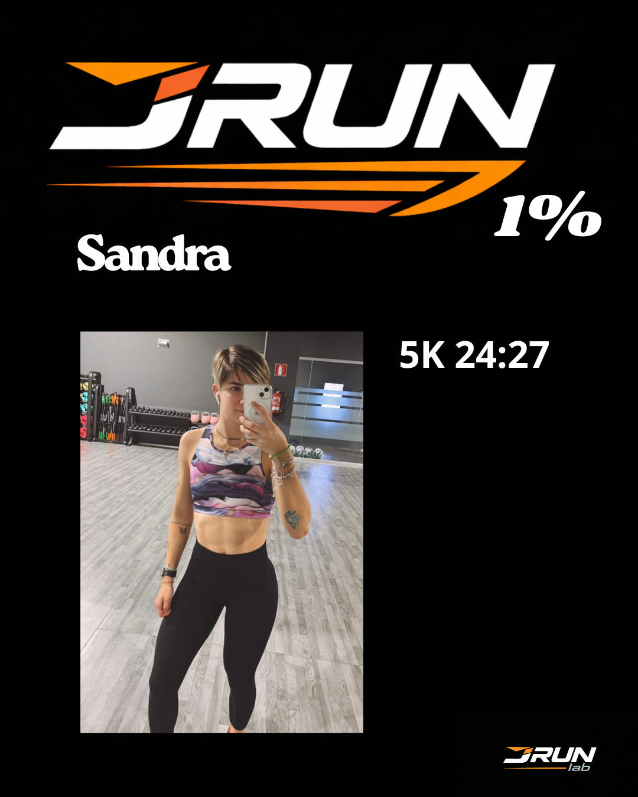
Analizamos tu situación y vemos cómo mejorar tu rendimiento con el sistema JRUN.
Quiero mejorar